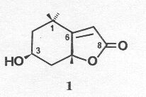

Loliolide from Salvia divinorum
Leander J. Valdés III
Department of Chemistry, The University of Michigan,
Ann Arbor, MI 48109
HTML by Arachnophilia
Journal of Natural Products (1986) 49: 171.
As part of our investigations (1,2) of the psychotropic Mexican labiate, Salvia divinorum Epling & Játiva-M., we report the presence of loliolide (1), previously isolated from Lolium perenne (3), Gramineae, Digitalis purpurea L. (4), Scrophulariaceae, and several other species (5). The compound has recently been described to be a potent ant-repellent (8).

EXPERIMENTAL
PLANT MATERIAL. - S. divinorum was cultivated by the author at home and at the Matthaei Botanical Gardens. Voucher specimens have been deposited at the University of Michigan Herbarium.
EXTRACTION AND ISOLATION. - Air dried foliage (3.4 kg) of S.divinorum was extracted with Et2O using a Soxhlet apparatus. Repeated flash column and high pressure liquid chromatographic separations led to isolation of 15 mg of loliolide, mp 154-155° C (lit. 149-153°C). The compound was characterized by comparison of its mp, ir, 1H-nmr, ms, [a]D and uv to published values (3-7). The structure of loliolide was further corroborated by its partially and completely decoupled 13C-nmr spectra (CDCl3), d 26.58 and 27.07 (both q, C-1 CH3), 30.66 (q, C-5 CH3), 35.89 (s, C-1), 45.75 and 47.43 (both t, C-2 and C-4), 66.84 (d, C-3), 86.60 (s, C-5), 112.97 (d, C-7), 171.75 (s, C-6), 182.33 (s, C-8). Full details of isolation and identification are available from the author.
ACKNOWLEDGEMENTS
Research on S. divinorum has been funded in part by grants from the College of Pharmacy, the University of Michigan and an NIH research grant awarded to Dr. Masato Koreeda of this department. The NIH, NSF and University of Michigan contributed to the purchases of Bruker WM-360 nmr, Nicolet 60SX gc/ftir and Finnigan gc/ms spectrometers.
LITERATURE CITED
- L.J. Valdes III, J.L. Diaz, and A.G. Paul, J. Ethnopharmacology, 7, 287 (1983).
- L.J. Valdes III, W.M. Butler, G.M. Hatfield, A.G. Paul,and M. Koreeda, J. Org. Chem., 49, 4716 (1984).
- R. Hodges and A.L. Porte, Tetrahedron, 20, 1463 (1964).
- T. Wada, Chem. Pharm. Bull., 13, 43 (1965).
- G.R. Pettit, C.L. Herald, R.H. Ode, P. Brown, D.J. Gust, and C. Michel, J. Nat. Prod, 43, 753.
- S. Isoe, S.B. Hyeon, S. Katsumura, and T. Sakan,Tetrahedron Lett., 2517 (1972).
- H. Cadosch and C.E. Eugster, Helv. Chim. Acta., 57, 1466 (1974).
- A.L. Okunade, and D.F. Wiemer, J. Nat. Prod, 48, 472 (1985).
EXPERIMENTAL DETAILS OF LOLIOLIDE ISOLATION
GENERAL EXPERIMENTAL PROCEDURES
Salvia divinorum was grown at the author's home and at the Matthaei Botanical Gardens. Voucher specimens have been deposited at the University Herbarium. Air-dried leaves (3.4 kg) were finely ground and extracted with ether using a Soxhlet apparatus. The ethereal extract was dried in vacuo and partitioned between water and ethyl acetate. The organic fraction weighed 112 g after drying. Preliminary separations of the organic fraction were accomplished by using gradient-elution flash column chromatography (2) on 10 g portions of the fraction (5 x 15 cm columns of silica gel 60, 230-400 mesh) with hexane/EtOAC as the solvent system. Further purifications were performed using gradient-elution flash column chromatography on 2.5 x 15 cm columns of silica gel 60 (230-400 mesh) with hexane/EtOAC and CH2Cl2/MeOH solvent systems. Preparative hplc separations were performed using a Waters Liquid Chromatograph system (Models U6K injector, M45 solvent delivery system, R400 differential refractometer, and 440 absorbance detector) attached to a microporasil P/N 27477 S/N column (fitted with a C-18 Corasil prefilter) and Houston OmniScribe B-5000 chart recorder.
Melting points were taken uncorrected on a Thermolyne HP-12615 melting point apparatus. Infrared spectra were recorded on a Nicolet Model 60SX GC/FTIR Spectrometer as potassium bromide (KBr) discs. Chemical ionization (NH3 gas) mass spectra were taken with a Finnigan Model 4023 GC/MS spectrometer. Nuclear magnetic resonance spectra were obtained on a Bruker WM360 spectrometer (360 MHz for 1H and 90.56 MHz for 13C) in CDCl3 and all chemical shifts are reported in parts per 1 million relative to internal tetramethylsilane. Ultraviolet spectra were taken using a Beckman Model 25 Spectrophotometer. Optical rotations were determined on a Perkin-Elmer 241 polarimeter using a quartz cell of 10 cm length and 1 ml volume.
LOLIOLIDE (1). Preparative HPLC (hexane/Et2O 1:1) of a 57 mg fraction of S. divinorum extract led to isolation of 15 mg of 1 mp 154-155°C (recrystallized from hexane/Et2O). 1H NMR d1.276 (3H, s, 1 b -CH3), 1.472 (3H, s, 1 a -CH3), 1.535 (1H, dd, J = 3.52 14.62Hz, H2a), 1.619 (1H, d, J = 2.81Hz, 3 -OH), 1.785 (1H, dd,
J = 3.79, 14.03Hz, H4a), 1.787 (3H, s, 5-CH3), 1.981 (1H, ddd, J = 2.64, 2.64, 14.62Hz, H2b), 2.466 (1H, ddd, J = 2.64, 2.64, 14.03Hz, H4b), 4.338 (1H, m, H3), 5.697 (1H, s, H7). 13C NMR d 26.58 (q), 27.07 (q), 30.66 (q), 35.89 (s), 45.75 (t), 47.43 (t), 66.84 (d), 86.60 (s), 112.97 (d), 171.75 (s), 182.33 (s). Ir (KBr) n (max) cm-1 3436 (s), 3020 (w), 2975, 2949, 2923, 2884, 1725 (s), 1682, 1620 (s), 1474, 1455, 1423, 1418, 1391, 1375, 1328, 1314, 1286, 1274, 1264, 1233, 1192, 1177, 1161, 1125, 1099, 1028, 980, 963, 950, 943, 881, 867, 801, 783, 684, 617, 609, 575, 569 cm-1; cims (NH3) 40eV m/z (rel. int.) 215.1 (M+ +19, 12%), 214.1 (M+ +18, 100), 198.1 (M+ +2, 4), 197.1 (M+ +1, 35), 94.0 (5); eims 40eV m/z (rel. int.) 197.1 (M+ +1, 4%), 196.1 (M+, 7), 178.1 (26), 163.1 (12), 140.1 (32), 135.1 (18), 112.1 (23), 111.1 (100), 110.1 (15), 109.1 (17), 107.2 (20), 97.1 (18), 95.1 (26), 93.1 (11), 85.1 (35), 81.1 (16), 79.1 (12), 69.1 (18), 67.1 (23), 57.1 (42), 55.1 (12), 43.0 (91), 41.0 (24); [a]D -101.2º (c, 1.0, CHCl3), literature: -92º to -100.5º. Uv l (max) 218 nm, e = 8,600 (EtOH), literature: 212 to 215 nm, e = 14,200 to 14,800.
Previous LOLIOLIDE isolations: CA = Chemical Abstracts (Through volume 100)
2(4H)Benzofuranone-5,6,7,7a-tetrahydro-6-hydroxy-4,4,7a-trimethyl 6S-cis [5989-02-6]
Tripetalia paniculata: CA 76:56610k
Lythrum salicaria: CA 78:94863a
Cocculus carolinus: CA 78:20143n
Arnica montana: CA 83:20377v
Nicandra physaloides: CA 84:122127b
Plantago lanceolata: CA 84:147657n
"Tobacco": CA 85:59847g
Canscora decussata: CA 86:29952y
Pimelea spp.: CA 92:141462b
"Tea" : CA 94:80231e
"Mollusk": CA 94:27680z
Maytenus confertiflorus: CA 95:138482b
Padina tetrastromatica: CA 97:178798g
Verbascum phlomoides: CA 99:85139n
Gentiana pedicellata: CA 100:171540p